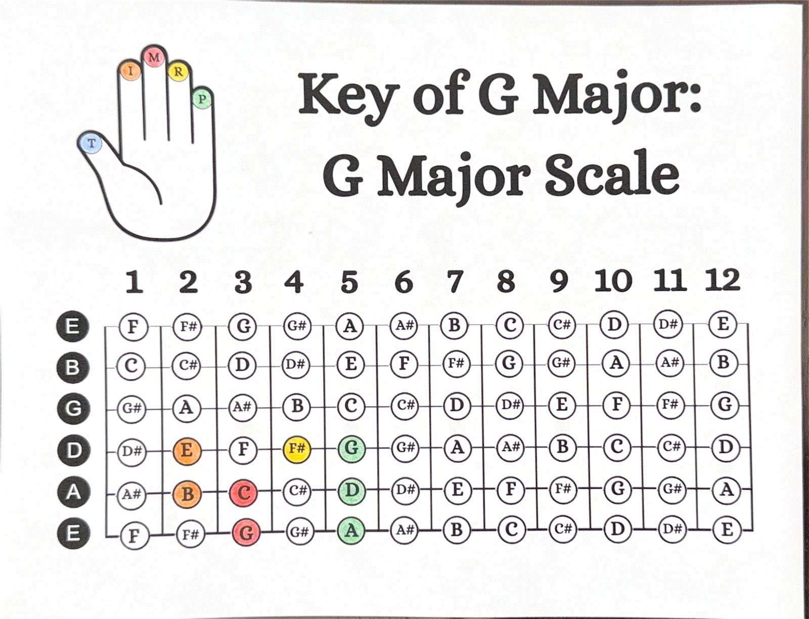
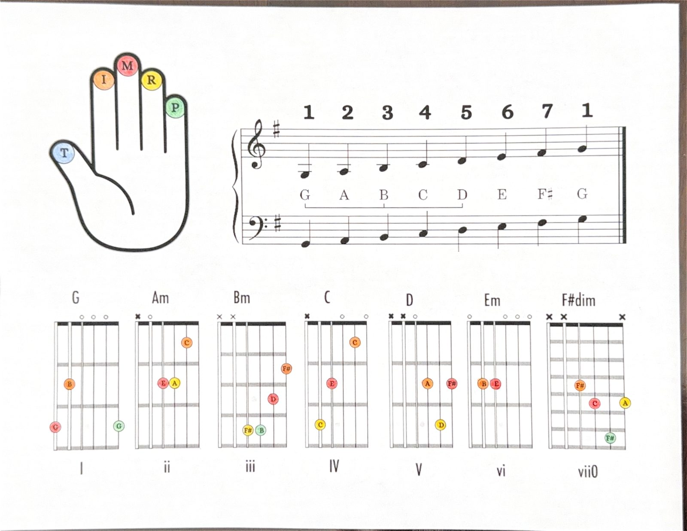
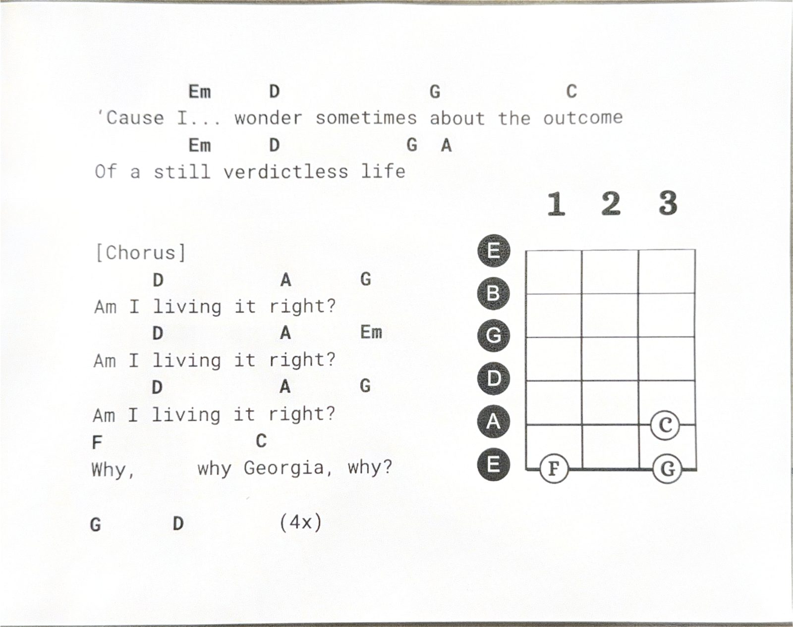

| Song | Artist | Chords | Why it works |
|---|---|---|---|
| Horse with No Name | America | Em, D6/9 | Just two shapes, whole song |
| Knockin' on Heaven's Door | Bob Dylan | G, D, Am, C | Classic 4-chord loop, slow tempo |
| Three Little Birds | Bob Marley | A, D, E | Only 3 chords, forgiving rhythm |
| Sweet Home Alabama | Lynyrd Skynyrd | D, C, G | Straightforward 3-chord riff into strum |
| Brown Eyed Girl | Van Morrison | G, C, D, Em | Exactly the Module 5 chord set |
| Riptide | Vance Joy | Am, G, C | Very common first song, simple pattern |
| I'm Yours | Jason Mraz | G, D, Em, C | Same 4 chords as Georgia's verse |
| Wonderwall | Oasis | Em7, G, Dsus4, A7sus4 | Iconic, learnable once Module 6–7 chords are solid |


